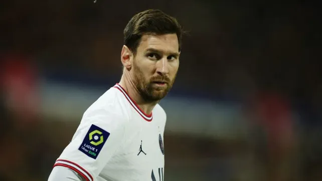

Lionel Messi no entrenó con el PSG por un dolor en las costillas y está en duda para jugar con Troyes
El crack rosarino estuvo ausente en el entrenamiento del equipo que dirige Mauricio Pochettino y que ya campeón de la Ligue 1 de Francia juega este domingo en París.
Lionel Messi no se entrenó este sábado con el resto del plantel del París Saint Germain (PSG) y lo hizo aparte debido a un dolor en las costillas, señaló el parte médico oficial del vigente campeón del futbol francés que mañana deberá jugar ante Troyes, como local, por la 36ta. fecha de Ligue 1 de Francia.
El parte médico del PSG informó además que al rosarino será sometido a un estudio este domingo por la mañana para resolver si jugará desde las 15.45 en el Parque de los Príncipes, en el sureste de la capital francesa.
En tanto el parte señaló además que el argentino Leandro Paredes continúa con su rehabilitación luego de ser operado de la pubalgia y que su compatriota Mauro Icardi, cuya lesión en el cuádriceps evoluciona favorablemente, retomará los entrenamientos a finales de la próxima semana.
El PSG ya es campeón francés al totalizar 79 unidades, 14 más que el Mónaco, que está segundo, aunque las críticas para con el equipo y el DT argentino Mauricio Poche
Messi visitará Qatar con el PSG a mediados de mayoLionel Messi viajará junto con París Saint Germain (PSG) a una visita a Qatar entre el 15 y 16 de mayo, según lo confirmó esta semana en sus redes sociales el reciente campeón de la Ligue 1 francesa.
La delegación, con Messi más otros dos rosarinos, Ángel Di María y Mauro Icardi, y el bonaerense Leandro Paredes, viajarán después del encuentro contra Montpellier por la jornada 37 de la Ligue 1.
"Inicialmente programada para enero pasado, la gira ofrecerá a los parisinos la oportunidad de conocer a sus seguidores qataríes y participar en una serie de activaciones con los socios del Club presentes en el lugar, como ALL, Aspetar, Ooredoo, Qatar Airways, Qatar Tourism y QNB", comunicó PSG.
Por otro lado, los futbolistas del conjunto campeón de Francia harán un Instagram Live por las redes de Qatar Airways, uno de sus principales auspiciantes.
Paris Saint-Germain ya viajó en otras ocasiones al país árabe: el Qatar Handball Tour 2014 y 2015, el Qatar Ladies Tour 2015 y el Qatar Tour 2013, 2015, 2017, 2018, 2019 y 2022.